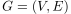
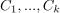
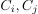
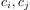
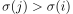

topologische Ordnung einer starken Zusammenhangskomponenten
1. Satz
Sei  ein gerichteter Graph mit den starken Zusammenhangskomponenten  Dann gibt es eine topologische Ordnung, sodass jede Kante, die zwei starke Zusammenhangskomponenten  verbindet, sodass für jede Kante die zwei verschiedene starke Zusammenhangskomponente  verbindet

1
2. Beweisskizze
Nach dem